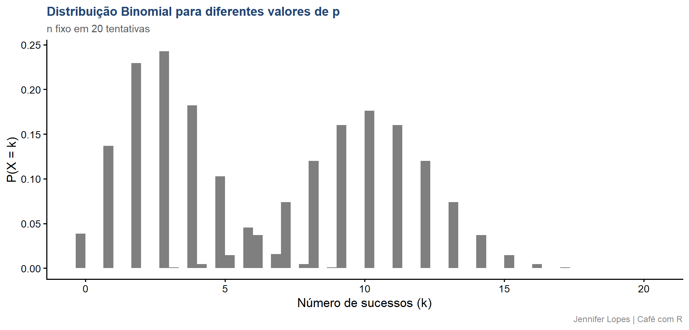
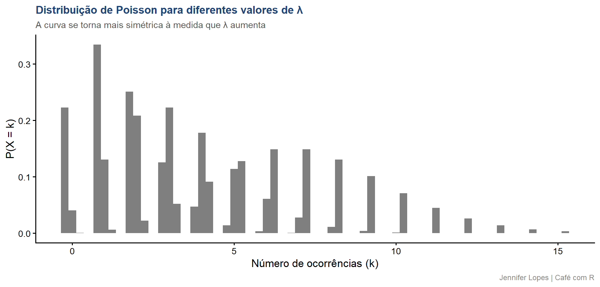

Aula 53. Distribuições Discretas
Binomial e Poisson, e como escolher entre elas
Acompanhe o Café com R
Que cada gole desperte uma nova ideia.
Que cada script abra uma nova conversa.
Que o Café com R se torne um ponto de encontro nosso.
SITE OFICIAL > https://jenniferlopes.github.io/meu_site/
Objetivos da aula
- Definir a distribuição Binomial, sua origem, seus parâmetros e suas propriedades
- Definir a distribuição de Poisson, sua origem, seus parâmetros e suas propriedades
- Aplicar as duas distribuições a dados reais de monitoramento fitossanitário
- Entender a relação matemática entre Binomial e Poisson
- Escolher corretamente entre as duas diante de um conjunto de dados de contagem
Bloco inicial
Variáveis Aleatórias Discretas
O que é uma variável aleatória discreta
Uma variável aleatória é discreta quando seu conjunto de valores possíveis é contável, tipicamente inteiro, resultado de contagem, e não de medição contínua.
Contar plantas doentes em uma parcela, ou contar insetos capturados em uma armadilha, são exemplos de variáveis discretas.
A distribuição de uma variável discreta é descrita por uma função de probabilidade, que atribui uma probabilidade a cada valor possível, diferente da função de densidade usada para variáveis contínuas.
Bloco 1
Distribuição Binomial
Conceito e origem
A distribuição Binomial modela o número de sucessos em \(n\) tentativas independentes, cada uma com a mesma probabilidade de sucesso \(p\).
Contexto: em cada parcela de um monitoramento fitossanitário, 20 plantas são avaliadas quanto à presença de uma doença. Cada planta é uma tentativa, doente ou sadia, sucesso ou fracasso, com a mesma probabilidade de infecção em toda a parcela.
| Símbolo | Significado |
|---|---|
| \(n\) | Número de tentativas, plantas avaliadas por parcela |
| \(p\) | Probabilidade de sucesso em cada tentativa |
| \(X\) | Número de sucessos observados, plantas doentes |
Função de probabilidade e propriedades
\[P(X = k) = \binom{n}{k} p^k (1-p)^{n-k}, \quad k = 0, 1, \ldots, n\]
| Propriedade | Fórmula |
|---|---|
| Média | \(E[X] = np\) |
| Variância | \(\text{Var}(X) = np(1-p)\) |
- A variância da Binomial é sempre menor ou igual a \(n/4\), atingindo seu máximo quando \(p = 0{,}5\). A variância depende diretamente de \(p\), ao contrário da Poisson, que veremos a seguir.
Aproximação normal, quando é válida
Quando \(n\) é suficientemente grande e \(p\) não está próximo de 0 ou de 1, a distribuição Binomial se aproxima de uma distribuição Normal com \(\mu = np\) e \(\sigma^2 = np(1-p)\).
Uma regra prática comum exige \(np \geq 5\) e \(n(1-p) \geq 5\) para que essa aproximação seja razoável.
No contexto deste estudo: com \(n=20\) e \(p=0{,}15\), \(np = 3\), abaixo do limiar recomendado, a aproximação normal não é adequada aqui, a Binomial exata deve ser usada diretamente.
Código: curvas binomiais para diferentes n e p
Gráfico: curvas binomiais

Quando aparece na prática
A Binomial se aplica sempre que existe um número fixo de tentativas, cada uma com apenas dois resultados possíveis, e a mesma probabilidade de sucesso entre tentativas.
No contexto deste estudo: cada parcela tem exatamente 20 plantas avaliadas, o número de plantas doentes por parcela segue naturalmente uma distribuição Binomial, se a probabilidade de infecção for razoavelmente constante entre plantas da mesma parcela.
Código: aplicação aos dados de incidência
Output: aplicação e interpretação
# A tibble: 1 × 4
media_observada variancia_observada p_estimado variancia_esperada
<dbl> <dbl> <dbl> <dbl>
1 2.63 2.61 0.132 2.29- A variância observada está próxima da variância esperada sob o modelo Binomial, com \(p\) estimado em torno de 0,15. Essa proximidade é uma primeira evidência de que o modelo Binomial descreve razoavelmente estes dados.
Bloco 2
Distribuição de Poisson
Conceito e origem
A distribuição de Poisson modela o número de ocorrências de um evento em um intervalo fixo de tempo ou espaço, quando essas ocorrências são raras e independentes entre si.
Contexto: o número de insetos-praga capturados em uma armadilha, por semana, não tem um número fixo de “tentativas”, mas um processo contínuo de captura potencial ao longo do tempo.
| Símbolo | Significado |
|---|---|
| \(\lambda\) | Taxa média de ocorrências no intervalo considerado |
| \(X\) | Número de ocorrências observadas no intervalo |
Função de probabilidade e propriedades
\[P(X = k) = \frac{e^{-\lambda}\lambda^k}{k!}, \quad k = 0, 1, 2, \ldots\]
| Propriedade | Valor |
|---|---|
| Média | \(E[X] = \lambda\) |
| Variância | \(\text{Var}(X) = \lambda\) |
Important
Atenção: a Poisson tem a propriedade única de média igual à variância. Quando a variância observada nos dados é muito maior que a média, esse fenômeno é chamado superdispersão, e a Poisson deixa de ser o modelo adequado.
Código: curvas de Poisson para diferentes λ
Gráfico: curvas de Poisson

Quando aparece na prática
A Poisson se aplica quando o interesse é o número de ocorrências em um intervalo de exposição, sem um número fixo de tentativas discretas subjacentes, e quando os eventos são relativamente raros e ocorrem de forma independente.
No contexto deste estudo: o número de pragas capturadas por armadilha por semana é um exemplo típico de contagem por unidade de exposição, adequado ao modelo de Poisson.
Código: aplicação aos dados de pragas
Output: aplicação e interpretação
# A tibble: 1 × 3
media_observada variancia_observada razao_variancia_media
<dbl> <dbl> <dbl>
1 3.4 2.74 0.804- A razão entre variância e média está próxima de 1, consistente com a propriedade fundamental da Poisson. Não há evidência de superdispersão relevante nestes dados, o que sustenta o uso do modelo de Poisson para as capturas semanais.
Bloco 3
Escolhendo entre Binomial e Poisson
Binomial x Poisson, quando cada uma se aplica
| Pergunta | Resposta | Distribuição indicada |
|---|---|---|
| Existe um número fixo e conhecido de tentativas? | Sim | Binomial |
| O interesse é a contagem de eventos por intervalo de tempo ou espaço, sem número fixo de tentativas? | Sim | Poisson |
| A variância observada é aproximadamente igual à média? | Sim | Consistente com Poisson |
| A variância observada é bem menor que \(np(1-p)\) ou muito maior que a média, respectivamente? | Sim | Investigar modelo alternativo |
Poisson como limite da Binomial
Quando \(n\) é grande, \(p\) é pequeno, e o produto \(np\) permanece constante e moderado, a distribuição Binomial converge para uma distribuição de Poisson com \(\lambda = np\).
Esse resultado explica por que, na prática, contagens de eventos raros em muitas oportunidades, como número de sementes contaminadas em um grande lote, podem ser modeladas tanto por uma Binomial quanto por uma Poisson equivalente, com resultados numéricos muito próximos.
Erro comum 1, aplicar Binomial sem número fixo de tentativas
Usar a distribuição Binomial quando não existe um número claro e fixo de tentativas subjacentes, como ocorre nas capturas de armadilha, produz um modelo mal especificado, mesmo que os dados sejam contagens inteiras.
Identificar se existe um denominador natural, o número de tentativas, é o critério central para decidir entre Binomial e Poisson.
Erro comum 2, ignorar superdispersão em dados tipo Poisson
Ajustar um modelo Poisson sem verificar a razão entre variância e média, quando essa razão é substancialmente maior que 1, subestima os erros padrão das estimativas e infla artificialmente a significância estatística.
Nesses casos, distribuições alternativas, como a binomial negativa, tornam-se mais apropriadas, tema retomado na aula sobre transformação de dados e GLM.
Resumo: distribuições discretas
| Distribuição | Parâmetros | Média | Variância | Função no R |
|---|---|---|---|---|
| Binomial | \(n\), \(p\) | \(np\) | \(np(1-p)\) | dbinom() |
| Poisson | \(\lambda\) | \(\lambda\) | \(\lambda\) | dpois() |
Obrigada!

Continue praticando e explorando.
Esta aula é parte do projeto Café com R. É open source. Use, compartilhe e adapte.
Siga o Café com R
Que cada gole desperte uma nova ideia.
Que cada script abra uma nova conversa.
Que o Café com R se torne um ponto de encontro nosso.
SITE OFICIAL > https://jenniferlopes.github.io/meu_site/

Jennifer Lopes | Café com R